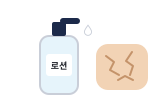
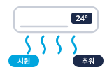
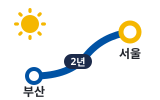
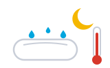

01시작 · Opening인사 · 이름
안녕하십니까? 저는 다라봇이라고 합니다. 저는 부산에서 2년 동안 살았고 지금은 서울에서 살고 있어서 한국의 여름 날씨에 많이 익숙해졌습니다.
Hello. My name is Daraboth. I lived in Busan for two years and now live in Seoul, so I have become used to Korean summer weather.
Korean Summer Speech · K-Specialist · 2026-08-28
A short speech comparing summer in Korea and Cambodia. Each part is one difference, then one shared feeling at the end.

날씨Humid, but dry skin
24도Cool for Koreans, cold for CambodiansYour four parts run like one day: 옷 (Get dressed), 날씨 (Check the sky), 음식 (Eat), 더위 피하기 (Go out).

Space listen · ← → move · K show Korean
안녕하십니까? 저는 다라봇이라고 합니다. 저는 부산에서 2년 동안 살았고 지금은 서울에서 살고 있어서 한국의 여름 날씨에 많이 익숙해졌습니다.
Hello. My name is Daraboth. I lived in Busan for two years and now live in Seoul, so I have become used to Korean summer weather.
한국 회사에서는 날씨가 더울 때 남자도 반바지를 입고 출근할 수 있는데, 다른 사람들도 다 반바지를 입고 있어서 저도 마음이 편합니다.
At Korean companies men can wear shorts to work when it is hot, and since everyone else is in shorts too, I feel comfortable.
하지만 캄보디아 회사에서는 날씨가 더워도 항상 유니폼을 입어야 해서 여름에는 조금 힘듭니다. 회사 밖에서도 다릅니다. 캄보디아 사람들은 햇빛을 싫어해서 날씨가 더워도 긴팔 옷과 긴바지를 많이 입습니다.
But at Cambodian companies you must wear the uniform however hot it is, so summer is a little hard. Outside work it differs too. Cambodians dislike the sun, so even when it is hot they often wear long sleeves and long trousers.
한국 여름은 보통 습하지만, 바람이 없는 날에는 공기가 건조해서 피부도 같이 건조해집니다. 그래서 저는 로션을 바르는데, 가끔 잊어버려서 피부가 건조할 때가 많습니다.
Korean summer is usually humid, but on windless days the air is dry, so my skin dries out with it. So I use lotion, but I often forget, and then my skin is dry.

더운 날씨는 잠에도 영향을 줍니다. 저는 더우면 잠을 잘 못 자서 여름에는 밤이 제일 힘듭니다.
Hot weather affects sleep too. When it is hot I cannot sleep well, so summer nights are the hardest part for me.
에어컨도 다릅니다. 실내 온도가 24도면 한국 사람들은 시원하다고 하지만, 캄보디아 사람들은 춥다고 합니다. 캄보디아 사람들은 그만큼 추위를 많이 느끼는데, 저는 이것이 재미있습니다.
AC is different too. At 24 degrees indoors Koreans say it is cool, but Cambodians say it is cold. Cambodians feel cold that easily, and I find that interesting.
꾸이띠아우와 삼러꺼꼬는 캄보디아의 유명한 국물 음식인데, 아주 뜨겁지만 여름에도 평소처럼 먹습니다.
Kuy Teav and Samlor Korko are famous Cambodian soup dishes, and although they are very hot we eat them in summer as usual.
저도 여름에 이 음식을 먹고, 스팅 에너지 음료도 계절과 상관없이 항상 마십니다.
I eat them in summer too, and I drink Sting energy drink all year regardless of the season.
한국에서는 여름에 친구들과 한강공원 수영장에 가는데, 물에 들어가면 하루 종일 더웠던 것이 금방 사라집니다.
In Korea I go to the Han River park pool with friends, and once I am in the water a whole hot day disappears at once.
캄보디아에서는 친구들과 나무가 많은 끼리롬 같은 곳에 캠핑을 갑니다. 산 위의 바람이 더위를 다 날려 보내는 것 같았고, 저는 그날을 지금도 기억합니다.
In Cambodia I go camping with friends to places like Kirirom, which has many trees. It felt as if the wind at the top blew all the heat away, and I still remember that day.
하지만 각자의 방식으로 더위를 이겨내려는 마음은 비슷하다고 생각합니다. 이상으로 발표를 마치겠습니다. 들어주셔서 감사합니다.
But I think the wish to get through the heat, each in their own way, is similar. That concludes my presentation. Thank you for listening.
The nine from the drill. Answer in your head, then tap Listen to compare.
부산에서 2년 동안 살았고, 지금은 서울에서 살고 있습니다.
I lived in Busan for two years, and now I live in Seoul.
저는 더우면 잠을 잘 못 자서 여름에는 밤이 제일 힘듭니다.
When it is hot I cannot sleep well, so summer nights are hardest for me.
캄보디아에 있는 산인데, 나무가 많아서 시원하고 캠핑하기 좋습니다.
It is a mountain in Cambodia, and since it has many trees it is cool and good for camping.
국수와 국물이 있는 음식인데, 캄보디아에서는 아침에도 자주 먹습니다.
It is a noodle and broth dish, and in Cambodia we often eat it at breakfast too.
여러 가지 채소와 고기를 넣고 끓인 국물 음식입니다.
It is a soup boiled with various vegetables and meat.
에너지 음료인데, 저는 계절과 상관없이 매일 마십니다.
It is an energy drink, and I drink it every day regardless of the season.
회사 규정이라서 날씨와 상관없이 입어야 합니다.
It is a company rule, so you have to wear it regardless of the weather.
두 나라 여름은 서로 다르게 힘들어서 고르기 어렵습니다. 하지만 밤에 잠을 잘 잘 수 있는 여름이 더 좋습니다.
The two summers are hard in different ways, so it is difficult to choose. But I prefer the summer where I can sleep well at night.
저는 두 나라에서 모두 여름을 보내 봐서, 그 차이를 이야기하고 싶었습니다.
I have spent summers in both countries, so I wanted to talk about the difference.
“확인 필요 · check” means confirm it is true for you before you rely on it.
네, 저희 회사도 날씨가 더울 때는 반바지를 입을 수 있습니다.확인 필요 · check
Yes, my company also lets us wear shorts when it is hot.
여자들은 반바지보다 시원한 치마나 원피스를 더 많이 입는 것 같습니다.
Women seem to wear cool skirts or dresses more than shorts.
피부가 타는 것을 싫어해서, 그늘을 찾고 긴팔을 입습니다.
They dislike getting tanned, so they seek shade and wear long sleeves.
네, 여름에 비가 많이 오는 장마가 있는데, 그때는 아주 습합니다.
Yes, there is a rainy season with heavy rain, and it is very humid then.
특별한 것은 아니고, 평범한 수분 로션을 사용합니다.
Nothing special, just an ordinary moisturizing lotion.
에어컨이나 선풍기를 켜고 시원하게 하고 잡니다.확인 필요 · check
I turn on the AC or a fan to cool down, then sleep.
저는 25도나 26도가 제일 편합니다.확인 필요 · check
I am most comfortable at 25 or 26 degrees.
냉면이나 삼계탕을 많이 먹습니다. 저도 냉면을 좋아합니다.확인 필요 · check
People eat naengmyeon or samgyetang a lot. I like naengmyeon too.
닭과 인삼을 넣고 끓인 국물 음식인데, 여름에 힘을 내려고 먹습니다.
A soup boiled with chicken and ginseng, eaten in summer for energy.
국물이 시원하고 깔끔한 맛입니다.
The broth has a clean, refreshing taste.
매일 마시지만 하루에 한 캔만 마셔서 괜찮다고 생각합니다.확인 필요 · check
I drink it daily but only one can a day, so I think it is fine.
여름에 친구들과 가끔 갑니다.
I go sometimes with friends in summer.
프놈펜에서 차로 두세 시간쯤 걸립니다.
It takes about two or three hours by car from Phnom Penh.
네, 친구들과 자연에서 쉬는 것을 좋아합니다.
Yes, I like relaxing in nature with friends.
캄보디아는 일 년 내내 덥지만, 한국은 여름에만 덥고 습합니다.
Cambodia is hot all year, but Korea is hot and humid only in summer.
네, 이제는 로션도 바르고, 더위를 피하는 방법도 배웠습니다.
Yes, now I use lotion and have learned ways to escape the heat.
친구들과 끼리롬에 캠핑 가던 것이 그립습니다.
I miss going camping at Kirirom with friends.
The hardest ones: doors the script opens but never walks through. A returning judge will find them.
한국에서는 여름에 냉면이나 삼계탕을 많이 먹습니다. 삼계탕은 닭과 인삼을 넣고 끓인 국물 음식인데, 여름에 더위를 이기려고 먹습니다.
The script says Korea has summer food but never names one. Name 냉면 / 삼계탕.
보통은 습하지만, 실내에서 에어컨을 오래 켜면 공기가 건조해져서 피부도 건조해집니다.
The windless-day dry-air claim is weak. Reframe as AC + personal experience, do not defend it as fact.
더우면 잠을 잘 못 자고, 공기가 건조하면 피부가 나빠집니다. 그래서 물을 많이 마시고 로션을 바릅니다.
Your opening promises 건강 (health). Be ready to pay it off.
Tap a word's play button to hear it. Hide one side, then recall it before you tap to check.
안녕하십니까? 저는 다라봇이라고 합니다. 오늘은 한국과 캄보디아의 여름 날씨 차이와 생활이나 건강에 미치는 영향에 대해 말씀드리겠습니다. 여름이 되면 한국과 캄보디아의 생활 모습이 많이 달라집니다. 저는 부산에서 2년 동안 살았고 지금은 서울에서 살고 있어서 한국의 여름 날씨에 많이 익숙해졌습니다. 다른 점은 네 가지입니다. 옷, 날씨, 음식, 그리고 더위를 피하는 방법입니다. 그럼 시작하겠습니다.
Hello. My name is Daraboth. Today I will talk about the difference between Korean and Cambodian summer weather, and its effect on daily life and health. When summer comes, daily life looks quite different in Korea and Cambodia. I lived in Busan for two years and now live in Seoul, so I have become used to Korean summer weather. There are four differences: clothes, weather, food, and how we escape the heat. Then let me begin.
첫 번째는 옷입니다. 한국 회사에서는 날씨가 더울 때 남자도 반바지를 입고 출근할 수 있는데, 다른 사람들도 다 반바지를 입고 있어서 저도 마음이 편합니다. 하지만 캄보디아 회사에서는 날씨가 더워도 항상 유니폼을 입어야 해서 여름에는 조금 힘듭니다. 회사 밖에서도 다릅니다. 캄보디아 사람들은 햇빛을 싫어해서 날씨가 더워도 긴팔 옷과 긴바지를 많이 입습니다. 이렇게 한국과 캄보디아는 회사에서도 밖에서도 옷이 많이 다릅니다.
First is clothes. At Korean companies men can wear shorts to work when it is hot, and since everyone else is in shorts too, I feel comfortable. But at Cambodian companies you must wear the uniform however hot it is, so summer is a little hard. Outside work it differs too. Cambodians dislike the sun, so even when it is hot they often wear long sleeves and long trousers. So Korea and Cambodia differ a lot in clothes, at work and outside it.
두 번째는 날씨입니다. 한국 여름은 보통 습하지만, 바람이 없는 날에는 공기가 건조해서 피부도 같이 건조해집니다. 그래서 저는 로션을 바르는데, 가끔 잊어버려서 피부가 건조할 때가 많습니다. 더운 날씨는 잠에도 영향을 줍니다. 저는 더우면 잠을 잘 못 자서 여름에는 밤이 제일 힘듭니다. 캄보디아는 더운 계절이 길고 바람이 많이 불어서 한국 여름과는 느낌이 많이 다릅니다. 에어컨도 다릅니다. 실내 온도가 24도면 한국 사람들은 시원하다고 하지만, 캄보디아 사람들은 춥다고 합니다. 캄보디아 사람들은 그만큼 추위를 많이 느끼는데, 저는 이것이 재미있습니다. 같은 여름이라도 두 나라에서 느끼는 더위는 이렇게 다릅니다.
Second is the weather. Korean summer is usually humid, but on windless days the air is dry, so my skin dries out with it. So I use lotion, but I often forget, and then my skin is dry. Hot weather affects sleep too. When it is hot I cannot sleep well, so summer nights are the hardest part for me. In Cambodia the hot season is long and windy, so it feels quite different from Korean summer. AC is different too. At 24 degrees indoors Koreans say it is cool, but Cambodians say it is cold. Cambodians feel cold that easily, and I find that interesting. Even in the same summer, the heat feels this different in the two countries.
세 번째는 음식입니다. 한국에는 삼계탕이나 냉면, 콩국수처럼 여름에 먹는 음식이 있고, 특히 복날에는 보양식을 챙겨 먹습니다. 하지만 캄보디아에는 계절에 따라 달라지는 음식이 거의 없습니다. 꾸이띠아우와 삼러꺼꼬는 캄보디아의 유명한 국물 음식인데, 아주 뜨겁지만 여름에도 평소처럼 먹습니다. 저도 여름에 이 음식을 먹고, 스팅 에너지 음료도 계절과 상관없이 항상 마십니다. 그래서 캄보디아에서는 여름이 와도 식사가 거의 그대로입니다.
Third is food. Korea has summer foods such as samgyetang, naengmyeon, and kongguksu, and on the hottest days (boknal) people eat restorative food (boyangsik); but Cambodia has almost no food that changes with the season. Kuy Teav and Samlor Korko are famous Cambodian soup dishes, and although they are very hot we eat them in summer as usual. I eat them in summer too, and I drink Sting energy drink all year regardless of the season. So in Cambodia, even when summer comes, meals stay much the same.
마지막은 더위를 피하는 방법입니다. 한국에서는 여름에 친구들과 한강공원 수영장에 가는데, 물에 들어가면 하루 종일 더웠던 것이 금방 사라집니다. 캄보디아에서는 친구들과 나무가 많은 끼리롬 같은 곳에 캠핑을 갑니다. 한번은 올라갈 때 정말 더울 것 같았는데, 산 위에 도착해 보니 전혀 덥지 않았습니다. 산 위의 바람이 더위를 다 날려 보내는 것 같았고, 저는 그날을 지금도 기억합니다.
Last is how we escape the heat. In Korea I go to the Han River park pool with friends, and once I am in the water a whole hot day disappears at once. In Cambodia I go camping with friends to places like Kirirom, which has many trees. Once, going up, I thought it would be really hot, but when I got to the top it was not hot at all. It felt as if the wind at the top blew all the heat away, and I still remember that day.
이렇게 옷, 날씨, 음식, 그리고 더위를 피하는 방법까지 한국과 캄보디아는 여러 가지가 다릅니다. 하지만 각자의 방식으로 더위를 이겨내려는 마음은 비슷하다고 생각합니다. 이상으로 발표를 마치겠습니다. 들어주셔서 감사합니다.
So in clothes, weather, food, and even how we escape the heat, Korea and Cambodia differ in many ways. But I think the wish to get through the heat, each in their own way, is similar. That concludes my presentation. Thank you for listening.
Q. 한국에서 얼마나 사셨습니까?
How long have you lived in Korea?
A. 부산에서 2년 동안 살았고, 지금은 서울에서 살고 있습니다.
I lived in Busan for two years, and now I live in Seoul.
Q. 한국 여름에서 무엇이 제일 힘듭니까?
What is the hardest part of Korean summer?
A. 저는 더우면 잠을 잘 못 자서 여름에는 밤이 제일 힘듭니다.
When it is hot I cannot sleep well, so summer nights are hardest for me.
Q. 끼리롬은 어떤 곳입니까?
What kind of place is Kirirom?
A. 캄보디아에 있는 산인데, 나무가 많아서 시원하고 캠핑하기 좋습니다.
It is a mountain in Cambodia, and since it has many trees it is cool and good for camping.
Q. 꾸이띠아우는 어떤 음식입니까?
What kind of food is Kuy Teav?
A. 국수와 국물이 있는 음식인데, 캄보디아에서는 아침에도 자주 먹습니다.
It is a noodle and broth dish, and in Cambodia we often eat it at breakfast too.
Q. 삼러꺼꼬는 어떤 음식입니까?
What kind of food is Samlor Korko?
A. 여러 가지 채소와 고기를 넣고 끓인 국물 음식입니다.
It is a soup boiled with various vegetables and meat.
Q. 스팅은 무엇입니까?
What is Sting?
A. 에너지 음료인데, 저는 계절과 상관없이 매일 마십니다.
It is an energy drink, and I drink it every day regardless of the season.
Q. 캄보디아 회사에서는 왜 유니폼을 입습니까?
Why do Cambodian companies wear uniforms?
A. 회사 규정이라서 날씨와 상관없이 입어야 합니다.
It is a company rule, so you have to wear it regardless of the weather.
Q. 한국 여름과 캄보디아 여름 중에서 어느 쪽이 더 좋습니까?
Which do you prefer, Korean or Cambodian summer?
A. 두 나라 여름은 서로 다르게 힘들어서 고르기 어렵습니다. 하지만 밤에 잠을 잘 잘 수 있는 여름이 더 좋습니다.
The two summers are hard in different ways, so it is difficult to choose. But I prefer the summer where I can sleep well at night.
Q. 이 주제를 왜 골랐습니까?
Why did you choose this topic?
A. 저는 두 나라에서 모두 여름을 보내 봐서, 그 차이를 이야기하고 싶었습니다.
I have spent summers in both countries, so I wanted to talk about the difference.
Q. 다라봇 씨 회사에서도 반바지를 입습니까?
Does your company also allow shorts?
A. 네, 저희 회사도 날씨가 더울 때는 반바지를 입을 수 있습니다.
Yes, my company also lets us wear shorts when it is hot.
Q. 한국 여자들도 반바지를 입고 출근합니까?
Do Korean women also wear shorts to work?
A. 여자들은 반바지보다 시원한 치마나 원피스를 더 많이 입는 것 같습니다.
Women seem to wear cool skirts or dresses more than shorts.
Q. 캄보디아 사람들은 왜 더위보다 햇빛을 싫어합니까?
Why do Cambodians dislike the sun more than the heat?
A. 피부가 타는 것을 싫어해서, 그늘을 찾고 긴팔을 입습니다.
They dislike getting tanned, so they seek shade and wear long sleeves.
Q. 한국의 장마를 압니까?
Do you know Korea’s rainy season (jangma)?
A. 네, 여름에 비가 많이 오는 장마가 있는데, 그때는 아주 습합니다.
Yes, there is a rainy season with heavy rain, and it is very humid then.
Q. 어떤 로션을 사용합니까?
What lotion do you use?
A. 특별한 것은 아니고, 평범한 수분 로션을 사용합니다.
Nothing special, just an ordinary moisturizing lotion.
Q. 밤에 너무 더울 때는 어떻게 합니까?
What do you do when it is too hot at night?
A. 에어컨이나 선풍기를 켜고 시원하게 하고 잡니다.
I turn on the AC or a fan to cool down, then sleep.
Q. 몇 도를 제일 좋아합니까?
What temperature do you like most?
A. 저는 25도나 26도가 제일 편합니다.
I am most comfortable at 25 or 26 degrees.
Q. 한국에는 여름에 어떤 음식을 먹습니까?
What food do people eat in summer in Korea?
A. 냉면이나 삼계탕을 많이 먹습니다. 저도 냉면을 좋아합니다.
People eat naengmyeon or samgyetang a lot. I like naengmyeon too.
Q. 삼계탕이 무엇입니까?
What is samgyetang?
A. 닭과 인삼을 넣고 끓인 국물 음식인데, 여름에 힘을 내려고 먹습니다.
A soup boiled with chicken and ginseng, eaten in summer for energy.
Q. 꾸이띠아우는 어떤 맛입니까?
What does Kuy Teav taste like?
A. 국물이 시원하고 깔끔한 맛입니다.
The broth has a clean, refreshing taste.
Q. 스팅은 건강에 괜찮습니까?
Is Sting okay for your health?
A. 매일 마시지만 하루에 한 캔만 마셔서 괜찮다고 생각합니다.
I drink it daily but only one can a day, so I think it is fine.
Q. 한강 수영장에 자주 갑니까?
Do you go to the Han River pool often?
A. 여름에 친구들과 가끔 갑니다.
I go sometimes with friends in summer.
Q. 끼리롬까지 어떻게 갑니까?
How do you get to Kirirom?
A. 프놈펜에서 차로 두세 시간쯤 걸립니다.
It takes about two or three hours by car from Phnom Penh.
Q. 캠핑을 좋아합니까?
Do you like camping?
A. 네, 친구들과 자연에서 쉬는 것을 좋아합니다.
Yes, I like relaxing in nature with friends.
Q. 두 나라 여름의 가장 큰 차이는 무엇입니까?
What is the biggest difference between the two summers?
A. 캄보디아는 일 년 내내 덥지만, 한국은 여름에만 덥고 습합니다.
Cambodia is hot all year, but Korea is hot and humid only in summer.
Q. 한국에 와서 여름 습관이 바뀌었습니까?
Have your summer habits changed since coming to Korea?
A. 네, 이제는 로션도 바르고, 더위를 피하는 방법도 배웠습니다.
Yes, now I use lotion and have learned ways to escape the heat.
Q. 캄보디아 여름이 그립습니까?
Do you miss Cambodian summer?
A. 친구들과 끼리롬에 캠핑 가던 것이 그립습니다.
I miss going camping at Kirirom with friends.
Q. 한국 여름 음식이 뭔데요?
So what is Korean summer food?
A. 한국에서는 여름에 냉면이나 삼계탕을 많이 먹습니다. 삼계탕은 닭과 인삼을 넣고 끓인 국물 음식인데, 여름에 더위를 이기려고 먹습니다.
Q. 습한데 왜 피부가 건조해요?
It is humid, so why does your skin get dry?
A. 보통은 습하지만, 실내에서 에어컨을 오래 켜면 공기가 건조해져서 피부도 건조해집니다.
Q. 건강에 미치는 영향은요?
And the effect on health?
A. 더우면 잠을 잘 못 자고, 공기가 건조하면 피부가 나빠집니다. 그래서 물을 많이 마시고 로션을 바릅니다.
죄송합니다. 다시 한 번 말씀해 주시겠습니까?
Sorry, could you say that once more?
죄송합니다. 조금 천천히 말씀해 주시겠습니까?
Sorry, could you speak a little more slowly?
좋은 질문입니다. 잠깐만 생각해 보겠습니다.
Good question. Let me think for a moment.
죄송합니다. 그건 잘 모르겠습니다. 나중에 찾아보겠습니다.
Sorry, I do not know that. I will look it up later.
Say it in your head first, then tap the box to check.